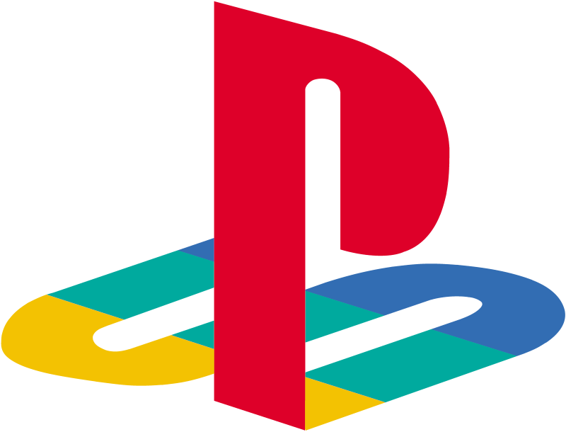
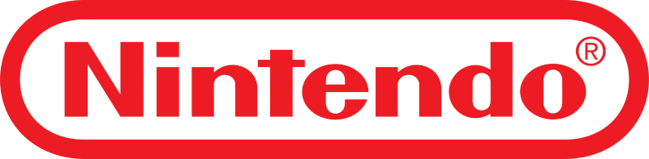

Esse é um Site sobre consoles e jogos
História dos consoles
Um console de videogame é um aparelho eletrônico projetado para rodar jogos digitais, geralmente conectado a uma TV ou monitor. Ele permite que o jogador interaja por meio de controles específicos e uma interface dedicada. Os primeiros consoles surgiram nos anos 1970, com jogos simples e gráficos básicos, mas abriram caminho para a evolução da indústria dos games. Desde então, os modelos ficaram mais potentes, versáteis e conectados.
As Empresas mais populares do mundo de consoles são
Playstation
Xbox

Nintendo

Os jogos mais jogados da História dos consoles
- Minecraft
- Grand Theft Auto V
- Red Dead Redemption 2
- Fortnite
- The Legend of Zelda: Breath of the Wild
- Elden Ring
- The Witcher 3: Wild Hunt
- Super Mario Odyssey
- God of War (2018)
- Halo: Combat Evolved
Nós também temos as histórias de cada uma das empresas se estiver interessado
Página sobre a Playstation
Página sobre a Xbox
Página sobre a Nintendo